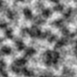
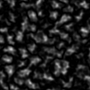
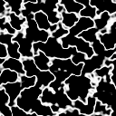
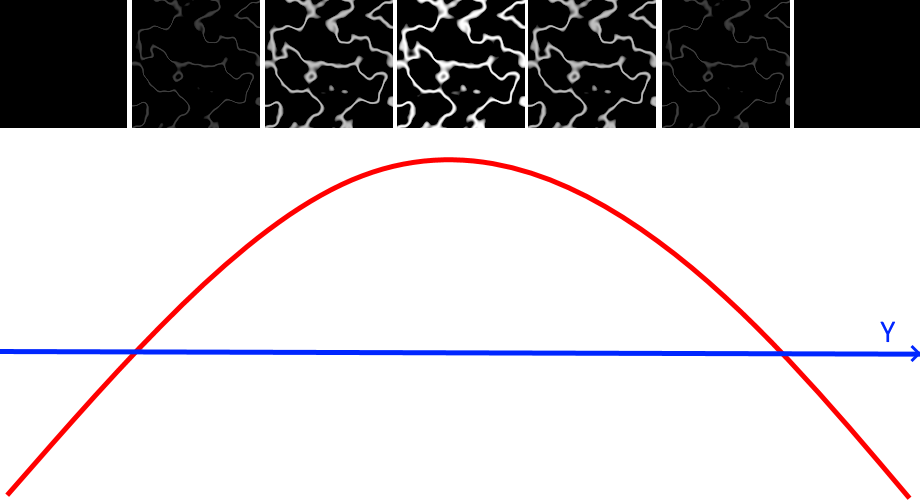
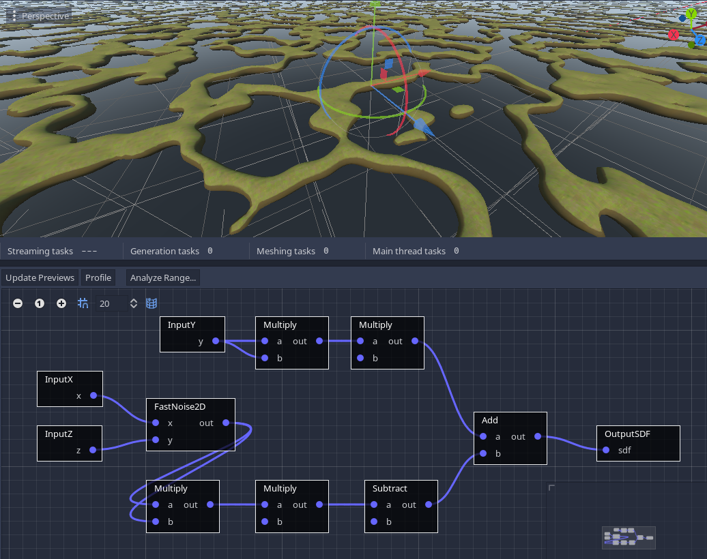
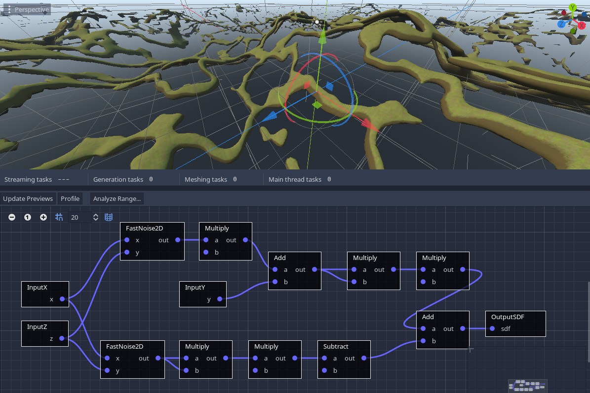
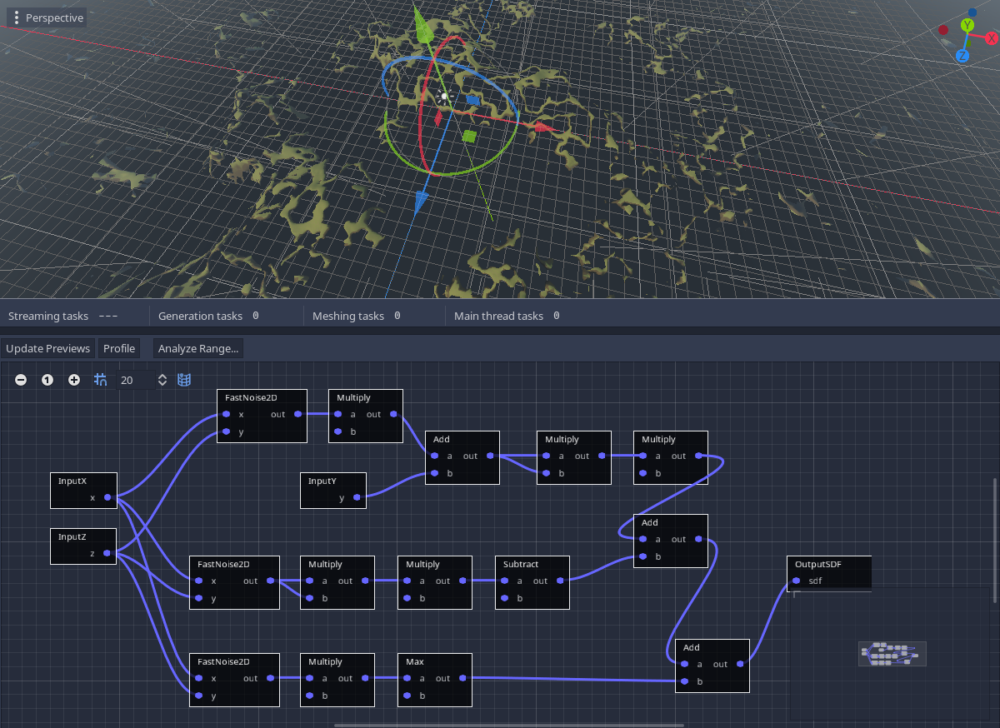
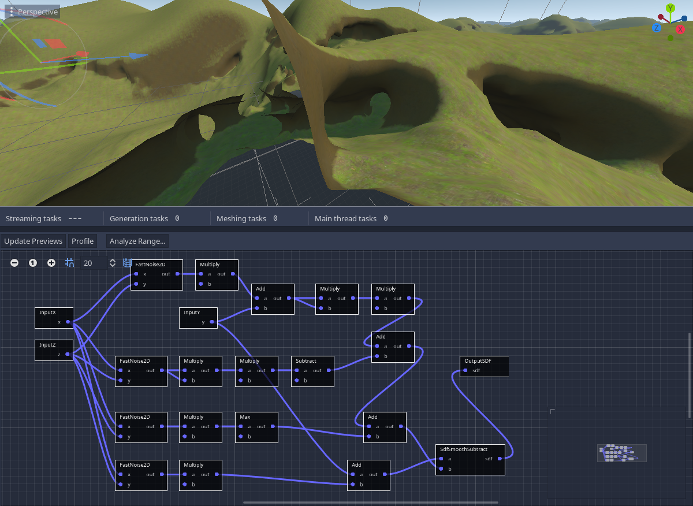
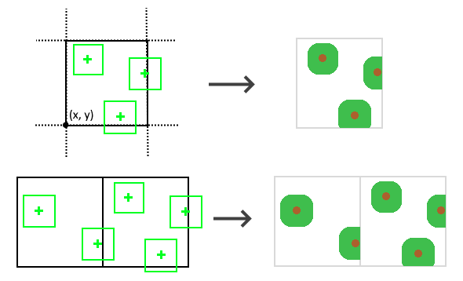
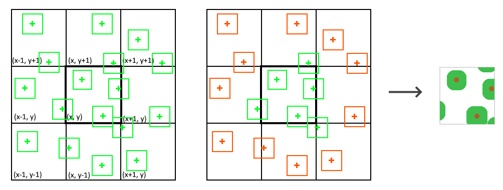

程序化生成
本节介绍地形程序生成所涉及的技术。有些是实验性的，可以调整。文章将使用图形或脚本，并且可能比文档的其他部分更高级，因此您应该首先熟悉 API。
带有图形生成器的洞穴
可以通过从基础 SDF 地形中减去噪音“蠕虫”来生成洞穴。为了简化方法，让我们首先看一下2D噪声是什么样子的，有几个八度：

如果我们将噪声乘以自身（即平方），我们得到：

如果我们将其夹紧以突出显示低于接近零的阈值的值，我们可以注意到一个类似路径的模式：

在 2D 中（或在 3D 中使用归一化坐标时），这是生成河流或沟壑的关键。但洞穴的问题在于获得3D的圆形“蠕虫”，而不仅仅是2D形状。因此，我们可以通过仍然使用2D噪声来作弊，但是我们沿Y轴调制阈值。为此，我们需要一条抛物线形曲线，可以用二阶多项式获得，例如 y^2

回到体素图，我们可以直接将洞穴生成节点连接到输出，只是为了预览它们的外观，而无需其余地形：

在调整噪声和其他值后，我们得到了那些著名的蠕虫，但有两个问题：
我们可以通过在 Y 坐标添加额外的 2D 噪声层来解决第一个问题，这样它就可以垂直扰动洞穴。用额外的乘数重新使用地表噪声有时可以证明是有效的，因此我们避免计算额外的噪声。

第二个问题也可以通过另一层低频噪声来解决，可以将其添加到洞穴阈值中，因此洞穴将缩小到某些区域成为死胡同。同样，添加乘数可能会改变这种转变的急剧程度。

最后，我们可以通过减去洞穴来将我们的地形与洞穴混合在一起。这可以通过 SdfSmoothSubtract 节点来完成，本质上是做 terrain

这种方法可能存在变体，以获得不同的结果。
使用体素结构处理块边界
在 Minecraft 风格的地形中，生成基础地形后出现的一个非常常见的问题是如何在其中种植树木，因为这样的结构也是体素。在这种特定情况下，使用此引擎执行此操作时有许多注意事项，主要围绕以下限制：
生成 16x16x16 体素块时，无法访问此区域之外的体素。引擎在一次传递中使用多个线程生成块，因此访问邻居会严重影响性能，可能会破坏确定性，并且直接访问地形是不安全的。
下面描述了一种完全不涉及访问邻居的方法，并允许在基本高度是确定性的地形中生成树木（例如 2D 噪声高度图）。
确定性方法
查找树木应该生长的位置 (X, Z)
首先要做的是弄清楚，在当前区块中，树木应该在哪里生长。为简单起见，我们将它视为一个 2D 问题，其中树木可以在特定的 （X， Z） 位置生长（因为 Y 向上）。为此，我们需要找到地面上方体素的位置，并以确定性的方式进行，以便相同的种子将产生相同的结果。
但是如何使它具有确定性呢？我们可以使用 RandomNumberGenerator 实例的种子。但是，如果我们给它世界种子，每个街区都会有树在相同的位置。我们真正需要的是每个区块唯一的种子。我们可以通过使用块的 2D 坐标哈希来实现这一点：
var block_position := Vector3i(
origin_in_voxels.x >> 4,
origin_in_voxels.y >> 4,
origin_in_voxels.z >> 4) # floored division by 16
var rng := RandomNumberGenerator.new()
rng.seed = global_seed + hash(Vector2i(block_position.x, block_position.z))
现在我们可以生成块中有多少棵树，以及在哪里：
var block_size := out_buffer.get_size()
var tree_count := rng.randi_range(0, 2)
var tree_positions := []
tree_positions.resize(tree_count)
for i in tree_count:
var tree_pos := Vector3i(
rng.randi_range(0, block_size.x), 0, # 我们稍后离开Y
rng.randi_range(0, block_size.z))
# 注意，这些位置是块的本地位置
tree_positions[i] = tree_pos
查找高度 (Y)
但是我们仍然需要计算树生长的高度（Y 坐标）。一个问题是引擎生成立方块，因此在生成给定的 16x16x16 体素时，您无法访问下面的内容，您只知道块区域内的内容。
但是，如果使用 2D 高度图噪声生成基础地形，那么我们可以根据需要通过再次计算高度函数来计算任何 （x， z） 坐标处的地形高度。假设我们已经有了这样的 func get_height(x: float, y: float) -> float 函数，我们可以像这样完成 Y 坐标：
for i in len(tree_positions):
var tree_pos_local : Vector3i = tree_positions[i]
# 为此使用世界坐标
var tree_pos_global := tree_pos_local + origin_in_voxels
tree_pos_global.y := get_height(tree_pos_global.x, tree_pos_global.z)
# 返回局部坐标
tree_pos_local = tree_pos_global - origin_in_voxels
# 并存储回数组
tree_positions[i] = tree_pos_local
放置树
现在我们应该能够放置树，但是如果我们找到的位置在块外怎么办？我们无法在这些位置设置体素。
我们能做的，是首先确定树会有多大。一旦我们知道它的边界框，我们就可以放置体素，但只能放置那些与我们的块相交的体素。
要确定树有多大，听起来我们必须先生成树，然后以体素为单位确定它的边界框。我们可以在具有足够大的单独空白缓冲区中执行此操作，或者使用 a Dictionary of Vector3i 键和 int 值。但最后，最好将结果存储在适当大小的优化 VoxelBuffer 中。
我们不会在这里描述如何生成树本身，这不是本文的重点，并且可能因很多因素而有所不同。但它可能只是一个垂直的树干体素条，上面有一个叶子球体。可以通过提前预生成（或手工制作）一堆树并将它们存储在列表中来优化此步骤，因此所有树边界都是已知的，无需花时间详细生成它们。
我们可以将树数据打包到一个类中：
class TreeInfo:
# 树相对于当前块的位置
var instance_position := Vector3i()
# 缓冲区只存储树，就像模型一样，以便以后可以粘贴到世界中
var voxels : VoxelBuffer
# 树底部的位置，在包含树模型的VoxelBuffer中
var trunk_base_position := Vector3i()
因此，我们可以有一个树列表，而不仅仅是它们的位置：
var trees : Array[TreeInfo] = []
for tree_pos in tree_positions:
var tree : TreeInfo = generate_tree(rng)
tree.position = tree_pos
trees.append(tree)
我们可以把这个逻辑包装在一个函数 func generate_trees_for_block(block_position: Vector3i) -> Array[TreeInfo] 中，因为它以后可能会有用。
一旦我们知道每棵树的边界，我们就可以检查它们是否与当前块相交。如果他们这样做，我们可以使用 paste_masked 该方法只种植树，而无需用树中的空体素替换实心体素 VoxelBuffer ：
# 我们当前区块的AABB，在本地坐标中
var block_aabb := AABB(Vector3(), block_size.get_size() + Vector3i(1, 1, 1))
var voxel_tool := out_buffer.get_voxel_tool()
# 粘贴相交树
for tree in trees:
var lower_corner_pos := tree.instance_position - tree.trunk_base_position
var tree_aabb := AABB(lower_corner_pos, tree.voxels.get_size() + Vector3(1,1,1))
if tree_aabb.intersects(block_aabb):
voxel_tool.paste_masked(lower_corner_pos, tree.voxels,
# 我们要粘贴哪个频道
1 << VoxelBuffer.CHANNEL_TYPE,
# 掩蔽0，因为0被视为空气
VoxelBuffer.CHANNEL_TYPE, 0)
修复重叠
现在世界上应该会出现树木，但是当它们与块边界重叠时，它们将被切断。原因是每个块都不知道其邻居，它们只生成源自 X 轴和 Z 轴内部的树，并且只影响体素本身，因为它们无法修改它们的邻居。

我们可以决定固定它们的位置，使它们永远不会重叠，但考虑到它们在游戏中看起来多么“对齐”，这可能是不可接受的。
我们可以通过应用与获取其高度相同的推理来解决此问题。除了考虑当前块中的树，我们还可以检查将在相邻块中生成的树，因为我们可以重新运行函数以从给定块位置确定地获取它们。然后我们所要做的就是只保留那些与我们的块相交的。然后，每个块将在正确的位置生成相邻树。

请注意，这意味着每个块将重新计算其自己的树和相邻树的位置，因此给定块中的树将在生成世界期间多次计算。这也意味着 generate_tree 也会被多次调用。但是如果我们提前缓存生成的树模型（在游戏开始之前），这个过程会便宜得多。
var trees : Array[TreeInfo] = []
# 获取源自当前块及其邻居的树
for nz in range(-1, 2):
for nx in range(-1, 2):
var trees_in_block := generate_trees_for_block(block_position + Vector3i(nx, 0, nz))
trees.append_array(trees_in_block)
# 粘贴相交树
for tree in trees:
# 粘贴树的早期代码
# ...
此方法已在此演示中实现，尽管代码略有不同。
这种方法也用于Voronoi噪声（在FastNoiseLite中也称为蜂窝噪声）以产生无缝单元。
限制
当然，这种方法有其局限性：如果我们的地形不仅仅是一个高度图，包括浮岛、复杂的雕刻或 3D 噪声结构，它会使寻找高度的过程更加复杂。更糟糕的是，生成体素或整个块的相邻列将变得必要，只是为了找到最高的体素，这将使它太慢。
为了解决这个问题，我们也许可以缓存生成的块......
缓存方法
这个问题还有另一种方法，也可以通过今天的 API 限制来实现。但正如我们将看到的，由于线程问题，它实际上比看起来更复杂：
这个想法是，如果生成一个块需要知道它的邻居，那么生成器也可以生成它们，至少只生成所需的。在这里，我们将考虑一种情况，即每个块可以在 1 块半径内影响其邻居，但根据情况，依赖性可以在每个轴上进一步扩展。
实现
警告
本文中的代码尚未经过测试，可能无法按原样工作。它只是在这里给出一个想法，将涉及什么。
生成器可以有一个包含部分生成的块的成员变量：
class GeneratingBlock:
var voxels : VoxelBuffer
func _init():
voxels = VoxelBuffer.new()
voxels.create(16, 16, 16)
# [Vector3i] => GeneratingBlock
# 存储已部分生成但未直接请求的块。
# 这些块尚未完成生成，因此它们还不在地形中。
# 当一个块完全生成时，我们可以从这里删除它，因为我们不再需要它了。
var _generating_blocks := {}
# 由于VoxelGenerator是从多个线程调用的，我们必须保护成员变量不受并发访问的影响。
var _generating_blocks_mutex := Mutex.new()
如您所见，一旦我们考虑对邻居的实际访问，我们还必须处理多线程，因此互斥锁变得必要。
当要求生成器生成给定的块时，它可以首先查看 _generating_blocks 该块是否已经开始生成，因为邻居本身在不同的线程中生成。事实上，如果一个区块在生成时会影响它的邻居，那么相反的情况也会发生。请记住这一点！
然后我们还将检查我们要访问的每个邻居。对于每个缺少块的位置，我们将部分生成它们（例如仅基础）并将它们存储在 _generating_blocks .
现在，一旦我们有了当前区块及其邻居，我们就可以为当前区块及其邻居生成基础地形和树木。重要的部分是当前块将包含与其相交的所有树。邻居不会拥有它们，因为他们不会有邻居的邻居树（这就是为什么我们认为它们是部分的）。在粘贴树时，代码必须处理不同的本地偏移量，因为每个块在世界上都有不同的起源。
完成后，如果当前块在开始时处于状态 _generating_blocks ，我们可以将其删除，因为应该没有其他影响它的东西。我们将保留部分生成的 8 个邻居（如果有的话），以便在请求时从其他线程开始。
var block_position := Vector3i(
origin_in_voxels.x >> 4,
origin_in_voxels.y >> 4,
origin_in_voxels.z >> 4) # floored division by 16
_generating_blocks_mutex.lock()
# [Vector3i] => GeneratingBlock
# 世界上区块的子集，中心区块是当前区块
var blocks := {}
for nz in range(-1, 2):
for nx in range(-1, 2):
var block_position := current_block_position + Vector3i(nx, 0, nz)
if _generating_blocks.has(block_position):
blocks[block_position] = _generating_blocks[block_position]
else:
var block = GeneratingBlock.new()
generate_base_ground(block)
_generating_blocks[block_position] = block
_blocks[block_position] = block
for block_position in blocks:
var block = blocks[block_position]
# 使用一些函数生成树，该函数也获取块子集的映射，
# 因为如果树重叠，它可能能够修改多于一个块。
# 在该过程之后中心块将具有源自它的树，还包括源自其所有邻居的树。
generate_trees(block, blocks)
var central_block : GeneratingBlock = _generating_blocks[current_block_position]
_generating_blocks.erase(current_block_position)
_generating_blocks_mutex.unlock()
out_voxels.copy_from(central_block.voxels)
注意事项
问题是，为了始终如一地完成所有这些工作，我们必须在当前区块生成的整个过程中不断生成锁定 Mutex 的区块。如果我们不这样做，其他线程可能会开始弄乱相同的数据，并且可能会发生不好的事情。这就是这种方法可能非常慢的原因。
在前面显示的代码中，在整个生成过程中被天真地锁定，这会减慢生成速度到一个线程， _generating_blocks_mutex 而其他线程将卡住等待。
生成 1 个块需要部分生成其他 8 个块。我们可以考虑 GeneratingBlock 分别锁定 _generating_blocks 和单独，因为线程可以在不相互接触的块集上工作。但是在它们相互接触的情况下，每个线程都需要锁定 8 个互斥锁。但这可能会导致死锁，其中两个线程无限期地相互等待。
假设 2 个线程希望在不同时间锁定块 A 和 B：
最重要的是，如果依赖距离需要大于 1 个块，它很快就会变得更加昂贵。1 块依赖项需要检查 26 个邻居。2 块依赖项需要 124 个邻居。3 块依赖需要 342 个邻居...
多通道生成
多通道生成是另一种受前面描述的“缓存”方法启发的方法，但旨在直接在引擎中解决其缺点，并使用户的任务更简单。
想法如下：
但是，它目前在引擎中不可用：
将来可能会对此进行调查，因为此类问题也发生在其他功能上，例如轻度烘烤（不幸的是，这也是特定于这种地形的）。在撰写本文时，已经实现了一些先决条件（任务延迟和空间锁定），但需要时间才能将其正确集成到引擎中。